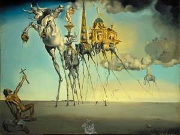

The Temptation of St. Anthony
Salvador Dalí · 1946 · Oil on canvas · 90 × 119.5 cm · Royal Museums of Fine Arts of Belgium, Brussels
In copyright. Look and learn: shown for study, not for download.
Dalí painted this in 1946 for a contest run by the producers David L. Loew and Albert Lewin, who wanted a painting of the temptation of Saint Anthony for their film The Private Affairs of Bel Ami. It was the only art contest he ever entered, and he lost: the film used Max Ernst's version. The obelisk on the second elephant comes from Bernini's Elephant and Obelisk in Rome. He was living in the United States at the time, where he had moved in 1940.